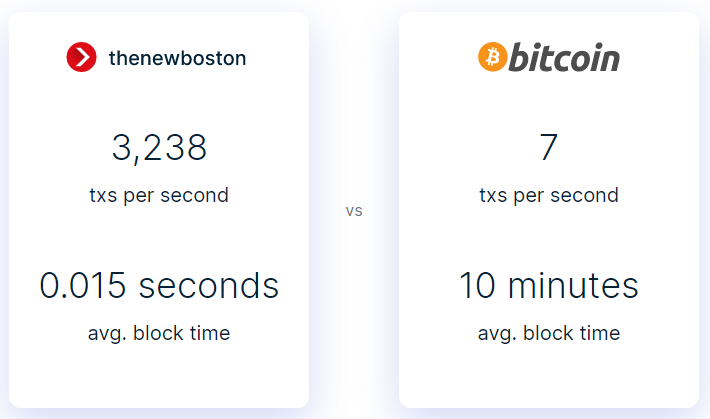

Understand Bitcoin and its friends
 Author: Hadzah, Emmanuel. 4th December,
2020.
Author: Hadzah, Emmanuel. 4th December,
2020.
The banking and finance world didn’t care about trust, they were just interested with their money. And so, history repeat itself. The finance world fell apart again, the 2008 financial crisis hit U.S and the world so hard, Corporate banks collapsed, Lehman Brothers and co. Research published in the British Medical Journal showed the impact of the 2008 crisis led to nearly 5,000 additional suicides in 2009 compared to the norm. Might be wondering what caused all this suicide, imprisonment, companies collapse? Trust. Broken trust caused these panics of the 1929 great depression and 2008 financial crisis. Lessons weren’t learned from history, and it was clear that respect for most bankers and financiers were lost whilst Tech people escaped the embarrassment. But before they escaped, they dropped a bomb into the banking and finance world with a secret message that reads: “I’ve been working on a new electronic cash system that is fully peer to peer, with no trusted third party” – Satoshi Nakamoto. A crypto bomb, blockchain. One may rant why did it took so long to release this weapon? It was just a matter of time, for the crypto world to move from Caesars Cryptography to Blockchain. A blockchain is one type of data structure that can provide discrete agreement and security when sharing data. It is the most secure database model upon which financial transactions in the digital world can be built on with no third party to handle trust.
Ironically, bitcoin (a Cryptocurrency) alleged to be built by the Cypherphunks was released into the finance world within the same year in September, the 2008 financial crisis, just weeks after Lehman brothers collapsed. It started silently as a ruthless little hot flame and birthed a decentralized finance movement right under the nose of one of the world finance cities, Wall Street. The first Bitcoin was created on January 3, 2009 with the establishment of the first bitcoin exchange, DWDollars in February 2010; Bitinstant, one of the first bitcoin exchange by Charlie Shrem in New York; MTGOX which operated in Japan and fell apart due to poor management; Nick Spanos, opens New York City’s first physical Bitcoin exchange. Bitcoin is a monetary revolution, that has no human monetary system like the central banks and to issue and regulate bitcoins as the human monetary system issue and regulate paper and coin money. Human monetary system (banks and governments) comes with corruption and risk. Bitcoin is a public distributed ledger controlled by no one, a digital electronic cash system with no trusted third party like government central banks, global banks, local banks to manage and distribute money. Bitcoin don’t sit in one basket; every bitcoin user is part of the distributed public ledger (blockchain) that manages and store the ledger data.
With bitcoin infrastructure management, the miners are important piece of the infrastructure. The miners are the computers that are tasked with maintaining the ledger of the blockchain where they verify and validate information; to make sure is trustworthy; and update it. Miners are rewarded with bitcoin for these tasks. Want to be a bitcoin miner? We will talk later. “Am not good at computing, I can’t be a miner to be rewarded with a bitcoin to have one”, don’t worry, to get a bitcoin and use as a currency? Is simple, you just exchange your country currency or the currency you are having for bitcoin at any bitcoin exchange like: Poloniex (International), Kraken (Mainly USD & EUR), Coinbase (US only), Bitstamp (International), BTCC (Mainly China, has international exchange), Luno (Mainly India, Africa & Singapore) and so on. Then you store your bitcoin in your bitcoin wallet application that stores, sends and receives bitcoins and it’s all you need to use bitcoin. There are a whole lot of known different bitcoin software and hardware wallets available, few of these are, Software wallets: Bitcoin Core, Coinbase, Copay, Bitgo, Luno and so on and hardware wallets: Ledger, Trezor, KeepKey and so on. When choosing a wallet, you need to decide whether you want to control and hold your own bitcoins or if you would prefer for someone else to do this for you. Now you understand and know how to buy a bitcoin, you can now use it to buy anything, yes anything, from pizza to your dream house. The 10,000 BTC pizza was the first thing bitcoin was used to buy, Rolex watch, mattresses, estates, Tesla car, sandwiches, gold coins, airplane tickets, movie tickets, coffee drinks, taxi fares, NBA match tickets, beer, charity funds, university tuition fees, and so on, as long as more and more retailers, shops, online marketplace, local marketplace, business are accepting bitcoin and its friends as a payment option.
Still don’t understand why you can use a cryptocurrency like bitcoin, a software-based stuff to buy things? If yes, then your problem is not you not understanding bitcoin and its friends but your problem is that you don’t understand what money really is. Money is not a paper, a coin or any type of object but money is basically just an accounting system, a way of recording who owns what, who has what, who owes what to whom. So, with such a nature of money, you need a third party like banks and government to serve as an intermediator between two parties to process and keep records of who owns what, who has what, who owes what to whom, serving as a monetary agent and issuing paper or coins as money to serve as a legal receipt for the two parties. Bitcoin and its friends have no monetary agents as explained earlier on.
There are so many importance uses of Cryptocurrencies apart buying things with it, Cryptocurrency is also another innovative way of sending and receiving remittances; can serve as a bank account by using Bitcoin wallets bank account to those not having one and people who hate commissions subtracted by banks for saving with them. Mobile money transfers are popular in developing countries because citizens often find it easier to send text messages as money instead of physically going to a particular third party (money transfer operator or branch. Bitcoin and other Cryptocurrencies are not legally accepted in Ghana and most African countries, taking baby steps in accepting cryptocurrencies. With every good thing, they are bad people making a bad replica of the good products to deceive others. So, you must watch out for fake bitcoin exchanges and other fake Cryptocurrencies like the OneCoin that has scam the world $19.4 billion where the founder and CEO is currently in a hideout.
Banking on bitcoin is great and promising in our financial world, but I see it to be in its experimental stage. "You can't stop things like bitcoin. It will be everywhere and the world will have to readjust. World governments will have of readjust" - John McAfee, founder of Mcfee; "No one can stop bitcoin" - Bill Gate ; " the internet need a currency and is bitcoin" - Jack Dorsey, CEO & co-founder of Twitter; Bitcoin is special and great due to it opensource and technology (Blockchain) driving it, fast forward giving birth to other Blockchain Cryptocurrencies like Ethereum, Litecoin, Ripple, and other under development Cryptocurrencies. One of the new upcoming Cryptocurrencies I have been following in its development stage is thenewboston TNB, created by the famous online coding software engineer, Bucky Roberts. One of my mentors when I started learning coding.

Bitcoin and its friends are charging bulls from the wild wild west attracting cowboys around the world, so get your cowboy hat and keep your feet strong and firm on the ground as you ride in the new free world.
About Author
Am Hadzah, Emmanuel #Writer(Poeems&Codes). Studied Biotechnology; Software architect; Data Analyst, using the Python snake in telling stories with data. Love having a cup of coffee as we talk about AI/ML, biotech, blockchain, general sci-tech, tech-business models and maybe the love beyond our darkmatter üòä
engage me on: